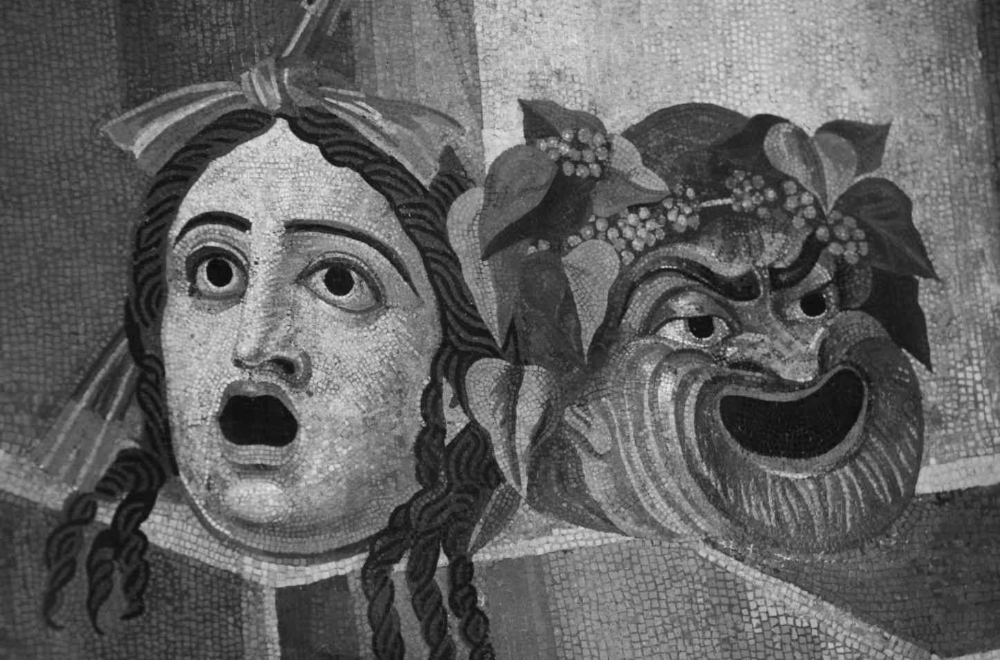

本章将考察古代文学的两个最流行的文类，即悲剧和喜剧，并试图解释它们何以成为如此成功的大众娱乐形式。我们会看到希腊和罗马每一位有作品传世的主要剧作家如何利用观众的价值观，并鼓励观众把舞台上的世界与自己的经历联系起来。那么我们就从悲剧开始，这是起源于古希腊的最有影响的文学形式之一，它的发展与公元前5世纪雅典的流行文化密不可分。悲剧的起源不明，不过都是些学术界的猜测：不过幸好起源问题并不重要，因为即便有明确的答案，也不会对现存的剧目本身有任何启示。我们最多只能说，悲剧作为一种把合唱歌曲和舞蹈，与演员跟歌队之间的对话结合起来的戏剧形式，它（和喜剧一样）可能是由合唱表演发展而来的。但到现存最早的剧目——埃斯库罗斯的《波斯人》——于公元前472年问世之时，悲剧已经是一种成熟的戏剧类型，而且成为一种竞赛诗歌的形式，随着诗人们为在竞赛中拔得头筹而不断革新和实验他们的诗作，悲剧的发展早已远远超出了它的宗教或庆典起源（如果这些的确是它的起源的话）。
读者会注意到我在上面提到了“大众娱乐”和“流行文化”，那是因为，悲剧和喜剧不是少数社会经济精英阶层专属的曲高和寡的文化（像大部分现代西方社会的戏剧那样），而是在大众节日上表演给大量观众看的，在公元前5世纪的雅典，观众曾多达6 000人，来自整个社会的各个阶层。（公元前4世纪末，剧场扩大到可以容纳多达17 000名观众。）举例而言，观众中很可能包括女人、孩子和奴隶，虽然数量不多，他们大概也不会在前排的豪华席位落座——数量不多是因为他们无权享受国家的票价补贴，所以要么自己有钱，要么得家人同意，他们才能前往观看；而前排的豪华座位是留给男性雅典公民和贵宾的，诸如从希腊其他城邦来访的达官显贵等。在雅典，表演戏剧的主要场合是一年一度的民间节日，即城邦酒神祭（或称大酒神节），该节日为期五天，其间有三位悲剧作家相互竞争，每人呈献四个剧目（通常包括三个悲剧和一个羊人剧；所谓羊人剧是对悲剧神话的滑稽讽刺表演，由吵闹的、半人半兽的羊人组成的歌队表演），还有五位喜剧作家，每人呈献一个剧目。
这是由国家赞助的盛大节日，当然富有的个人市民也会出资为歌队提供培训或服装等，而出现在这个节日上的杰出作品也就成了申请补贴这类艺术创作的理由（如果需要理由的话）。流传至今的古代戏剧文本都是表演剧本，但我们无法从中看到音乐、舞蹈和整个视觉场景，就只能在阅读的过程中重新想象它们了。女性角色由成年男性扮演（而不像莎士比亚戏剧中那样由男孩扮演），和多重角色扮演一样，这是靠使用面具、假发和戏服来完成的。因为在大型露天剧场演出，表演风格和身体动作都必须更大胆、更有表现力，但这并没有影响戏剧的情感效果。情节本身包含有大型歌队——悲剧中有15名合唱队员，喜剧有24名——创造了一种剧内观众，这群在戏中看戏的人也能与戏剧的主要人物互动，他们的想法和反应也是该剧意义的有机组成部分。毫不奇怪，这一载歌载舞的歌队和诸神一样，是现代希腊戏剧演出中最难以成功复制的部分。
要记住的一个基本要点是，与我们受到现代（后古典主义或新古典主义）“悲剧”观念的影响而想象出来的希腊悲剧相比，真正的希腊悲剧要更为丰富多样。新古典主义学者和剧作家们基于自己对亚里士多德《诗学》的误读，发明了悲剧的特定“规则”，但这些多半没用，因为它们与现存的古代戏剧剧目毫无关系。同样将人们引入歧途的，是试图推断出一种本质上悲剧性的世界观（简言之就是没有大团圆结局），再把这种世界观反向投射到悲剧这种古代文类上，如此一来，那些不符合这一世界观的剧目，就被重新归类为“浪漫悲剧”“逃离悲剧”“悲喜剧”，甚或“情节剧”，这自18世纪德国浪漫主义以来尤其盛行，但远在那以前就已有了。然而，虽说这种寻找“真正的悲剧”的做法未免为该文类设置了过于狭窄的藩篱，它却回应了现存剧目所共有的某种特征，也就是人类的苦难，即便在所谓“大团圆”式悲剧中也有所体现。我们在莎士比亚的悲剧中也可以看到类似的东西，它包括幽默的元素（虽然没有多少大团圆），也不符合新古典主义的规则，却因此而变得更加深刻感人。
所以在希腊悲剧中，总有人在受苦，形势也都很危急。受苦受难的英雄存在于神话（和宗教崇拜）中，而神话是悲剧的素材，已经过数代史诗和抒情诗人的改造，现在被彻底转变成一个全新的文类，为新的观众演出。神话的优点有很多：例如，观众的理解基础一致——不过为防他们不知道具体的神话故事，剧情一开始都会将具体细节一一交代，而诗人在处理或多或少为观众熟知的素材时，也大可发挥自己的想象力和创造力。观众对任何故事熟稔于心——比方说俄狄浦斯的神话，他在不知情的情况下杀死了自己的父亲，与母亲睡在一起并生下了四个孩子——不但不会消除悬念，事实上反而会产生悬念，因为他们会好奇这位诗人将如何处理已知必然发生的可怕结果。神话的使用还使得此时此刻的观众与剧中的虚构世界之间存在一定的（也是不尽相同的）距离，以便在一个想象空间内探索伤痛的主题（战争、谋杀、悲伤、乱伦、强奸、妒忌、复仇……），并激发起强烈的情感，又不致给观众造成心理创伤。
希腊悲剧最基本的道德范式之一，是所谓的“从苦难中学到教训”。这样一种“道德说教”剧的概念，也就是可以使我们变成更好的公民的戏剧，在我们的（后）现代自我听来格外教条，但古代思想的一个基本前提就是，任何形式的艺术都应该教会我们真实和有用的东西，从而使我们变得更好。众所周知，柏拉图驳斥了悲剧的教义，他的理想国会审查诗歌，确保诗歌符合他的道德和宗教观。在柏拉图看来，悲剧生动地描绘了那些容易遭遇灾难又长吁短叹的英雄，在道德和心理上侮辱了我们的人格，但他尤其憎恶这种文类（他曾鄙夷地提到“剧场政体”）也跟他对民主本身的藐视有关，因为他认识到悲剧是一种主要的大众艺术类别，有着广泛的号召力。
相反，柏拉图最出色的学生亚里士多德却驳斥了导师的反动政治和审美观点，他认为人能够通过mimesis （意为模仿，或虚构）来学习，并重申悲剧这种艺术形式的价值就在于，它能给人们灌输重要的知识。亚里士多德还提到了所谓的“悲剧悖论”，也就是说，我们能够通过观看舞台上的他人受苦受难而获得审美愉悦：模仿给了我们必要的距离，把这种静观变得怡情悦性、有益身心。这个问题自提出以来一直让悲剧理论家苦苦思索，令人印象尤深的是，它是由悲剧本身提出的，在欧里庇得斯的《酒神的伴侣》中，乔装的酒神狄俄尼索斯在诱惑彭透斯走向毁灭时，问他：“你真的想知道自己痛苦的根源是什么吗？”（815）
但悲剧的愉悦也有重要的道德和形而上层面的意义。因为悲剧提出的问题是，我们应该为人的苦难负多大的责任，对此，它给出的答案是令人振奋的，而非悲观沮丧的。至关重要的是，悲剧关心的是源于人类选择和行为的灾难：与现实生活中的苦难不同，悲剧中的苦难从来就不是纯粹偶然的，而是被放置在一个更大的道德和宗教框架内，这个框架赋予了人类灾难以形式和意义。因此悲剧是一个恐怖的文类，但同时也会给人带来极大的安慰，因为我们意识到宇宙是残酷的，却并非没有意义，我们在舞台上的混乱、痛苦和悲伤的背后看到了万事万物的秩序。我们或许会想起塞缪尔· 约翰逊的妙语（bon mot ）：“写作的唯一目的是让读者更好地享受生活，或更好地忍受生活。”看过悲剧的我们会心怀悲悯，提醒自己：他人的苦难更加深重。
悲剧描述的是一个脱轨的英雄世界，借此探讨了从生存困境（我们为什么会受苦？）到时政（雅典民主制度和帝国的裨益与风险）等各种问题。反复出现的核心主题包括各种生动刺激的傲睨神明（hybris ，即僭越的思考和行为）；人类知识和理解力的格局和局限，特别是与诸神相比；战争的原因和后果，延续了荷马对战争的看法，即战争既是残酷的，也是光荣的；卓越领袖或成功政体的品质，显示出明显的民主倾向，反对君主制、暴政和寡头政治；男人和女人的地位和角色及如何处理人类的性欲；种族和民族主义，体现在希腊人与野蛮人的关系，以及雅典人与其他希腊人的关系中；还有或许最频繁出现的，复仇的欲望及其往往自我毁灭的结果。下面详细考察其中的两个主题（知识和性别）。
自亚里士多德赞美索福克勒斯的《俄狄浦斯王》高超的情节构思和排山倒海的情感冲击力以来，该剧已经上升到了原型悲剧的地位。比如说，曾有一位古代评论家这样概括索福克勒斯的同辈悲剧作家伊翁：“真的，没有一个神志清醒的人会觉得伊翁所有的作品加起来能比得上《俄狄浦斯王》这一部作品。”（“朗吉努斯”，《论崇高》33.5）在现代，对该剧最著名的诠释当属西格蒙德· 弗洛伊德的解读，他认为这是一个普遍存在的男性幻想的故事，但不得不说，既然俄狄浦斯事实上不知道他父亲和母亲的真正身份，他本人就不可能有所谓的“俄狄浦斯情结”。然而该剧那种令人震惊和不安的力量至今不减，我们看到俄狄浦斯渐渐发现他打破了人类社会两个最基本的禁忌（弑父和乱伦），发现他生活中那些重大的成功标志——身为国王、丈夫和父亲的角色——事实上都是终将毁灭他的诡异幻影。俄狄浦斯的毁灭之所以可怖，不仅因为他所发现的事实骇人听闻，还因为该剧迫使我们想到，我们也很容易懵懂无知地采取行动，毫不知情地铸下大错。俄狄浦斯为他并非有意的行为受到了惩罚，因此该剧就呈现了一个残酷却无可逃遁的道德真理，用一位著名的现代哲学家的话说，“在一个人的人生故事中有一种至高无上的权威，它的行使者是此人已经做出的行为，而不仅仅是此人有意做出的行为”（伯纳德· 威廉斯，《羞耻与必然性》）。
三位悲剧作家都探讨了他们的时代中男女相互界定的性别角色，不光提出了做一个好男人（作为丈夫、父亲、儿子、公民、士兵等）意味着什么，也主张给予女性应有的尊重，特别是对身为妻子和母亲的女性，也就是说那仍是在基本的父权社会边界内的尊重。若论男人虐待妻子和家人会有怎样灾难性的后果，没有哪一部戏剧呈现得比欧里庇得斯的《美狄亚》更加有力。在该剧中，伊阿宋抛弃了美狄亚和他们的两个儿子，转而高攀上了一位希腊公主，致使美狄亚杀死了自己的孩子，来惩罚伊阿宋的不忠。在开场白中，美狄亚列出了女人命运的种种不公：她谴责丈夫占有着妻子的身体这一事实，指出性别双重标准允许男人三妻四妾，却不许女人有婚外情，最后发出了那句掷地有声的宣言：“我宁愿手持盾牌三次上阵，也不愿生一次孩子！”（《美狄亚》230—251） [1] 这也就是为什么在20世纪初妇女争取参政权的集会上，人们高声诵读美狄亚的话的原因，即便从整体上来看，在它起源的文化背景中，该剧绝对不是一部女性主义作品，也绝无争取现代意义上的平等权利的论调。然而虽说如此，这部剧的确戏剧化地表现了当女人的地位和权力不受尊重，会产生怎样的灾难后果，并痛斥了伊阿宋身为丈夫和父亲的失职。和希腊悲剧中经常发生的情景一样，男人先犯错，也因侵犯女人的权利而承担苦果。在（或许）有男有女的观众看到的戏剧世界中，社会的崩溃是两面的，以此来引导观众认识到，两性都应该尊重彼此的权利。所以说，虽然希腊悲剧的作者都是男人，但我们在这些剧目中清晰地看到了女人的视角，其力度或许超过了古典文学的任何其他文类。
和悲剧一样，作为一种文学类型的喜剧的早期阶段也鲜有人知。它或许是自满篇下流话和辱骂的大众娱乐中发展而来的（与第三章中讨论的讽刺诗相似），这些娱乐形式会作为次要部分在节日中表演，不过到现存最早的喜剧剧目，即阿里斯托芬的《阿卡奈人》于公元前425年问世之时，喜剧已经是一个成熟的戏剧门类，（和悲剧一样）综合了念白、歌曲和舞蹈。希腊化时期的学者们试图为这一文类的发展排序，把它分成了三个阶段：旧喜剧、中喜剧和新喜剧。遗憾的是，我们对中喜剧基本上无从评价，因为没有一个留存下来的例子，不过旧喜剧（政治的、淫秽的、荒诞的）和新喜剧（关于家庭的、克制的、写实的……）之间大体上的差别十分清楚。我们能够从阿里斯托芬的最后两部现存剧目，《公民大会妇女》和《财神》中看到一种转变，两部戏剧都写于公元前4世纪初，它们中包含的下流淫秽内容、针对个人的奚落和政治讽刺都较以前更少了，合唱的作用有所减弱，而到前4世纪末的新喜剧时代，作为一个戏剧人物的歌队就彻底消失了。
正如悲剧有三大剧作家（埃斯库罗斯、索福克勒斯、欧里庇得斯），旧喜剧也一样：克拉提努斯、欧波利斯和阿里斯托芬。虽然只有阿里斯托芬有完整的剧目存世，总共有11部（占他全部作品的四分之一），但我们有很多其他作品的片段，足以看出它们有很多主题和风格上的共同点。旧喜剧与它的戏剧手足悲剧有很多差异——比方说，怪异而非庄严的面具（见图4）；为了幽默，戏服在腹部和臀部加垫料，（所有男性角色）还吊着一个皮革做成的阴茎；口语化和淫秽下流的语言；明显的元戏剧元素，例如剧中会提到舞台设施；面对观众的旁白（迄今仍然是喜剧的一个广受欢迎的特征）——但二者虽有这么多明显的差别，喜剧和悲剧一样，也是反映当时雅典社会万象的文类，只不过喜剧多是以批评和嘲讽的形式来实现这一目标的。
喜剧的场景通常就设在观众所在的此时此地（而不是遥远的神话世界），不过它的情节充满幻想，例如前往云中鹧鸪国（《鸟》中新建的鸟类城市）或冥府（《蛙》）的旅行等。这些剧目都是根据它们的鸟类或蛙类歌队命名的（阿里斯托芬的《马蜂》也是一样），旧喜剧中频繁使用动物作为人类行为的模型或衬托，是它与讽刺诗的另一个共同点。喜剧“主人公”不是英雄神话中的某个大人物（某个阿基琉斯或奥德修斯），而是一个普通的雅典人，他对某一方面的社会现状不满，便费尽心思想出了一个别出心裁的实现梦想的计划（《蛙》在部分程度上是个例外，因为该剧的“主人公”是酒神狄俄尼索斯，他到冥府去请一位悲剧诗人来拯救城邦，但整部剧对这位神没有半点尊重敬畏）：因此，比方说，在《阿卡奈人》中，狄凯奥波利斯安排与雅典的大敌斯巴达私下签署了一份和平条约；在《鸟》中，两位雅典人受够了雅典和它没完没了的官司，说服鸟儿们在天空中建起了一座新城，大获成功；在《吕西斯特拉特》中，同名雅典女主人公说服来自好几个交战城邦的妇女加入她的性爱罢工，绝望的男人们因而被迫停战讲和了。

图4 哈德良位于台伯（如今的蒂沃利）的庄园中的罗马墙壁，上有悲剧面具和喜剧面具的镶嵌图案，该庄园始建于公元118年前后，是历史上最大的罗马庄园
大笑和喜剧当然也可以很严肃，让观众捧腹的东西恰恰揭示了他们的担忧和焦虑。阿里斯托芬的戏剧创作生涯大多集中在伯罗奔尼撒战争期间（公元前431—前404），对一个交战中的民主社会而言，有很多针对政客和指挥将军的讽刺不足为奇，但民主本身却从未被质疑，人们渴望和平是理所当然，但这并不意味着他们愿意为了和平付出任何代价。喜剧还会取笑性成见，例如聪明又高尚的吕西斯特拉特就跟她竭力争取过来实施其计划的那些满嘴性谎言、一心只想狂饮的女人构成了鲜明的对照。同样，和悲剧一样，这些喜剧文本不是性解放文件，在这些剧目的结尾，女人们回到了她们“自然的”领域——家中；但它们还是有力地展示了当前的男性领导人有多愚蠢、多无能。
试图描述幽默本来就会显得荒诞可笑。不过我们至少可以指出阿里斯托芬为了制造噱头所使用的一些典型的素材和技巧。首先要强调的是，当时表演的喜剧类型极多，无论你喜欢屎笑话（就是关于屎的笑话，而不是……）、屁笑话、粗俗闹剧或双关语，抑或你的口味更倾向于复杂的文学戏仿作品和政治讽刺，每个人都能从阿里斯托芬的作品中得到满足，和悲剧一样，喜剧也对各个阶层的民众有着极大的吸引力——这倒在意料之中，因为它们在同样的节日里上演，都想赢得各自竞赛中的第一名。那个经久不衰的喜剧修辞“生活如今真是糟糕啊！我年轻的时候就好一些……”被频繁使用，因为它针对的是一切形式的文化变革——音乐、诗歌、科学、哲学等多个领域的新风格，而通常由一对彼此互不理解的父子来表现代沟，是引发观众大笑的固定套路。
正如我们对旧喜剧的看法主要来自阿里斯托芬，我们对新喜剧的理解也在很大程度上受到了米南德的传世作品的影响，这位雅典剧作家的写作生涯从公元前4世纪末延续到前3世纪初。米南德写过逾百部剧目，但他的作品并没有被纳入中世纪的手稿传统，直到最近，我们对他的作品的了解还全都来自其他古代作家的引用，以及他对普劳图斯和泰伦提乌斯（下文还将写到这两位）等罗马剧作家的影响。然而自1890年代以后（对古典学者来说，这就是“最近”啦……），不断有新出版的莎草纸作品问世，改变了我们对米南德的成就的看法，现在我们至少有了一部完整的剧作《恨世者》（Dyskolos ），还有很多其他作品的完整和大幅篇章。如上所述，新喜剧与旧喜剧的不同之处在于它的风格更加写实，相比之下，显得更加平淡：例如新喜剧中没有辱骂或政治讽刺，那个充满活力的皮革阴茎也不见了。一位古代评论家曾在总结米南德高妙的写实主义戏剧时问道：“米南德和生活：是谁模仿了谁？”所以说，我们在米南德的喜剧中大概看不到阿里斯托芬的下流语言和超现实奇想，但他的作品有一种更温和也更反讽的幽默，展现古希腊社会风貌的力道丝毫不弱。
新喜剧的关注点从雅典的社会政治转向家庭生活场景，有好几个原因。最重要的是，被腓力二世和亚历山大大帝征服之后，此时的雅典处于马其顿的统治之下，没有民主，没有言论自由，直接对政治说三道四可能会很危险。不过说得更积极一点，关注日常生活的典型矛盾和问题——特别是家庭和恋爱关系——的艺术形式一定能吸引观众，因为我们都生活在家庭中，又（引用无数低俗歌曲的说法）都希望被爱。此外，许多人无疑会像今人一样，觉得政治太无聊了：比方说，简· 奥斯汀的小说中没有提到多少她那个时代的卢德主义者 [2] 或当地政府的改革，而是专注于爱情和家庭生活，但她仍然是拥有读者数量最多的英语经典作家。因此，新喜剧转向爱情和家庭问题不仅使之成为一切现代家庭和浪漫喜剧的先驱，也让它获得了一种普遍的共鸣，回响至今。
在米南德的时代（简· 奥斯汀的时代也是一样），青年男女之间的爱情不仅是他们两人的事，也是涉及整个家庭的大事，特别是因此而结亲的两家的父亲。于是那些剧目就聚焦于相关的矛盾和障碍，戏剧焦点变成了令人苦恼的状况和紧急关头的真相大白，如被绑架的女儿、不忠嫌疑或私生子女和弃婴等。值得注意的是，这些戏剧化事件中也处处都有强奸，这是我们认为喜剧中最不该有的东西。但由于它危及女人的生命、女人及其家人的荣誉以及即将出生的孩子的合法性和继承权，强奸事件成为古代家庭戏中的情节设计也是可以理解的。使用该桥段可能对剧情的发展有至关重要的作用，比方说在米南德的《公断》中，卡里西奥斯极端地指责他的妻子潘菲勒被人强奸，却对他自己过去曾犯过同样的罪行毫不在意——既然这是喜剧，结局必是“大团圆”，因此卡里西奥斯最终得知他就是孩子真正的父亲，他在他们婚前的一个节日里与潘菲勒发生了性关系，最终他意识到自己的双重标准和对妻子缺乏同情，流露出悔意。米南德的戏剧往往是这样的，复杂纠缠的剧情最终得到解决，突显了宽容和同情在人际关系中的重要性。
与希腊戏剧相比，罗马戏剧的门类更加宽泛，既有严肃的又有幽默的：悲剧；罗马历史剧；两种截然不同的喜剧，一种基于希腊新喜剧，另一种以本土的意大利传统为基础；闹剧，由一群定型角色（小丑、吹牛大王、贪吃者、罗锅儿、阴谋家等）表演充满憨傻蠢笨和下流言语动作的小品，以及对悲剧和神话的戏仿。还有两种由希腊戏剧改编的门类，在帝国时期非常流行：默剧更像我们今天的芭蕾舞剧而不是那种“他就在你身后！”的默剧表演，其中一位戴着面具的男性舞者在乐师与歌队的伴奏下表演（通常很悲惨的）神话场景（古希腊语pantomimus 的 意思就是“能模仿一切的人”）；最后还有滑稽剧，虽然英文名是mime，但它同样也与现代的mime（哑剧）大相径庭，因为在罗马的滑稽剧中，男演员和（居然还有）女演员不戴面具，表演有台词的小品，或淫荡下流，或议论时事，也有些是对爱情哀歌等严肃文学形式的滑稽模仿，其常有套路包括“丈夫、妻子、她的情人和女仆”的桥段，无异于现代闹剧中的“圣杯”桥段。
唉，和希腊戏剧一样，罗马戏剧也极少有作品存世，因而我们对罗马戏剧的看法也基本上是支离破碎和顾此失彼的，这是因为在公元前205—前160年前后的普劳图斯和泰伦提乌斯之后，便再无完整的罗马喜剧存世，也没有写于公元1世纪40—60年代的塞涅卡之前的完整悲剧存世。普劳图斯和泰伦提乌斯的喜剧都是迷人的作品，不仅因为他们是现有拉丁文学最早的完整实例，也是因为我们第一次可以详细地考察罗马人对一种希腊文学类型的改革。（如第二章所述，早期罗马史诗只有些片段存世。）这些作品虽然是在希腊原本的基础上改写的，却都表现出极大的创造力，而普劳图斯和泰伦提乌斯或许重复使用了新喜剧的场景、情节和人物，但他们的改写不是单纯的翻译，也为吸引新的意大利罗马观众而加入了各自不同的演绎：普劳图斯在《粗鲁汉》的序曲中骄傲地开玩笑说，“德谟菲勒斯［除了这里提到他之外，我们对这位希腊剧作家一无所知］写了这个剧目，马尔库斯［普劳图斯］把它改编成了野蛮人的剧［意即把它罗马化了］”。毕竟观众席上的许多人都不知道希腊语原著，因此罗马喜剧的兴衰完全取决于它自己的价值。在表演那些喜剧的节日上，它们也要与其他的大众娱乐形式争夺观众的注意，像杂技、走钢索的小丑、拳击手、摔跤手和角斗士等。我们从这些剧作的序曲中了解到，观众本身也是来自各个社会阶级和年龄层的人，包括男人和女人，他们可能非常粗鲁，要是觉得表演不够有趣，甚至会随时起身制止表演。
普劳图斯写了约130部喜剧，流传至今的有20部。首先令人吃惊的是这些剧作与米南德和泰伦提乌斯的写实风格截然不同。普劳图斯剧作的情节结构松散、语言丰富、有双关语、广泛使用吟唱抒情诗，还频繁玩弄戏剧传统，让人联想到希腊旧喜剧，比方说在阿里斯托芬的戏剧中，幽默的形式就很多样，从笼统的笑闹剧到形体喜剧，再到文学戏仿。“机智的奴隶”这个曾出现在阿里斯托芬喜剧中的人物，在普劳图斯笔下得到了进一步发展，他在大部分剧作中都用到了这个人物。典型的情节是，年轻的主人不知该如何得到自己心爱的姑娘，但他那位足智多谋的奴隶成功地哄骗了所有阻止他们在一起的人——情敌、奴隶贩子、皮条客、严厉的老父亲——最终皆大欢喜。罗马观众大概很享受这个乱套世界带来的令人颤抖的快感——奴隶居然比高他们一等的公民更聪明，但幻想永远以“常态”收尾，奴隶制度的权力关系当然也会复旧如初。社会和道德秩序总会回归，坏人或缺乏同情心的人物终将遭遇挫败。
泰伦提乌斯的作品共有六部喜剧，全都完整地保存至今，这在古代作家中是非常罕见的。一个主要原因是泰伦提乌斯的剧作在古代和后来被选入学校的课本，因为他自然优美的拉丁语及克制温和的道德说教被认为正是孩子们需要学习的东西；相反，普劳图斯的语言更难，他的喜剧被认为有伤风化，接近于闹剧和滑稽剧。（如果真像古代资料显示的那样，泰伦提乌斯最初是以奴隶身份从北非迦太基来到罗马的，他那堪称典范的拉丁语就更加惊人了。）泰伦提乌斯的六部剧中有四部是根据米南德的剧作改写的，众所周知，他因此而被尤利乌斯· 凯撒贬称为“半个米南德”，这很不公平，因为他不单改写希腊语原著来迎合罗马人的喜好和兴趣，也巧妙地把好几部希腊语原著的材料综合到一部剧中。泰伦提乌斯的剧作不像普劳图斯的作品有那么多性爱描写，那么热闹和富有音乐性，但它们仍有独特的喜剧魅力，他善辩地把自己更为雅致的风格转变成一种优势，暗示一群如此有学问的观众自然会喜欢他的剧目胜过对手们那些粗俗的闹剧，这样的恭维让观众们受用不尽。
和希腊新喜剧一样，罗马喜剧也基本上避免直接对当代政治说三道四（更不要说像旧喜剧那样攻击具体的政治家了），但它仍然反映和交代了影响罗马社会的基本问题。本书第一章提到，公元前3世纪末到前2世纪初是罗马历史的一段引人注目的关键时期，彼时罗马的胜利使它成为地中海沿岸的超级大国，这些戏剧就探讨了战争和帝国带来的（有好有坏的）变化。例如在普劳图斯的《俘虏》中，主要人物是一群最终重获自由的希腊战俘，这是有历史基础的：公元前194年，罗马将军弗拉米尼乌斯解救了1 200名罗马人，使他们免于在希腊为奴，而公元前216年的坎尼会战 [3] 之后，成千上万的罗马士兵却没有这么好的运气，那时罗马元老院拒绝向汉尼拔支付赎金赎回他们。罗马的扩张也影响了他们自己的种族和文化身份的发展，在普劳图斯的《小迦太基人》等剧作中，我们就能看到剧作家使用民族的刻板印象来达到喜剧效果：迦太基人奸诈狡猾，罗马人诚实直率。然而和米南德一样，罗马喜剧关注的不仅仅是日常生活中反复出现的问题——特别是婚姻、忠诚、育儿和金钱（举例而言，在普劳图斯的《一坛金子》中，老吝啬鬼欧克利奥一门心思想着在房前地里挖出的金子，根本没注意到自己的女儿被人强奸，即将产子）——也同样关注这些危机在紧急关头的解除，这是它对后来的西方喜剧传统巨大影响的核心所在。
如前所述，我们对罗马悲剧的观点和对喜剧的看法一样失之偏颇，虽然从公元前3世纪中期以后存在着一个延续的罗马悲剧传统，但大部分剧作都佚失了。留存下来的只有十部剧作，全都创作于这种艺术形式发展后期的罗马，全都被认定为塞涅卡的作品。不过其中一部，《奥塔山上的赫拉克勒斯》很可能不是由他所写，另一部《奥克塔维娅》，也就是现存的唯一一部罗马历史剧，写的是尼禄谋杀了自己第一个妻子的故事，显然不是塞涅卡所写（他是剧中的一个人物），因为它提到了塞涅卡死后发生的事件，包括尼禄自杀。许多学者认为其他八部确实由塞涅卡所写的悲剧是为了阅读或背诵而作，而不是为舞台表演而写，但我们对此并无十分把握，而且不管怎样，最重要的是这些剧作的内容和主题，它们深刻地揭示了公元1世纪40—60年代，在克劳狄一世和尼禄两位皇帝的统治之下，这些戏剧创作的政治和文化背景。
塞涅卡曾在公元41年遭到克劳狄一世流放，罪名是与前皇帝卡利古拉的妹妹私通，但又在公元49年被克劳狄一世的第四任妻子阿格里皮娜召回，还被任命为她12岁的儿子尼禄的导师。尼禄在公元54年登基之后，塞涅卡成为他最亲近的顾问并获得了极大的权力和财富，也为他的朋友和家人谋得了不少肥差。因参与推翻尼禄的阴谋败露，塞涅卡受牵连而被迫在公元65年自杀。因此，塞涅卡的大部分创作生涯都是在帝国权力和影响的中心展开的，鄙视他为人虚伪自是容易——比方说，这位亿万富翁满怀激情地宣扬财富乃身外之物的哲理，这样的立场在他生活的时代已经遭到了质疑，一位同代人问道：“是哪一门学问，哪一派哲学可以给他作为依据，可以在取得皇帝宠信的四年当中搜刮到三万万谢斯特尔提乌斯的财产？”（塔西佗，《编年史》第十三卷，第42章） [4] ——但塞涅卡的确对人性的弱点有着敏锐的观察。
和希腊悲剧一样，塞涅卡也使用希腊神话的君主制世界来反思自己所在时代的忧虑，其中很重要的，便是独裁统治所创造的风雨飘摇的政治世界。我们一次又一次地看到“绝对权力导致绝对腐败”，虽说剧中没有明确提及当代政治或批判罗马独裁政体——这么做在帝制时期的罗马是自找麻烦，在提比略统治时期已经有作家因此而被杀了——但塞涅卡笔下那些强大的主人公们被自私的邪恶逼近的阴森氛围，必定会在当时的读者或观众心中引起共鸣。抛开政治不谈，塞涅卡的悲剧在其他方面也反映了时代风貌：比方说它们恐怖的暴力和怪异的修辞——用T.S.艾略特刻薄的半夸张说法，他的人物“似乎都用一个声音说话，还大叫大嚷”——或者剧中描写的人类情感不受约束时会引发何种混乱和苦难，显然受到了斯多葛派哲学的影响。最后，这些剧作展现了一种惊人的元戏剧意识，意识到它们本身就是历史悠久的悲剧传统的一部分，例如当美狄亚奋起杀死他们的孩子来报复伊阿宋时，她高声宣布：“现在我是真正的美狄亚”（《美狄亚》910），或者当俄狄浦斯发现了自己的罪行并出于羞愤弄瞎双目时，他说：“这张［双目失明的］脸正适合俄狄浦斯”（《俄狄浦斯王》1003）。塞涅卡的悲剧对伊丽莎白一世和詹姆斯一世时期的英国戏剧（尤其是马洛、莎士比亚、琼森和许多复仇悲剧的作家）产生了极大的影响，对观看过大量现代戏剧，特别是电影形式的戏剧的观众来说，他所突出的暴力和怪诞气氛定不陌生。
总之，戏剧是古代世界社会生活的一个重要组成部分：在最小的城镇，在古典世界的遥远边陲，希腊和罗马殖民者们建起剧院，那是他们文化生活的必要元素。在我们的时代，没有哪一种古代文类像希腊悲剧那样生机盎然，它在全世界各地演出，仍然被看作是直面当代诸多问题的重要方式，包括战争、帝国主义、种族问题、性问题，不一而足。
[1] 译文引自张竹明译，《古希腊悲剧喜剧全集· 欧里庇得斯悲剧（中）》，译林出版社2007年版，第462页。
[2] 卢德主义者（Luddites）是19世纪英国民间对抗工业革命、反对纺织工业化的社会运动者。由于工业革命运用机器大量取代人力，使得许多手工工人失业，因此该运动的参与者常常摧毁纺织机。后世也将反对任何新科技的人称为卢德主义者。
[3] 公元前216年第二次布匿战争中的主要战役，以迦太基主帅汉尼拔入侵意大利罗马的粮仓坎尼城开始，以汉尼拔以少胜多击溃意大利大军结束。因汉尼拔用兵战术之高妙，成为军事史上最伟大的战役之一。
[4] 译文引自王以铸、崔妙因译，《塔西佗〈编年史〉》（上册），商务印书馆1981年版，第438页。